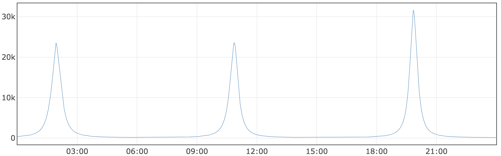
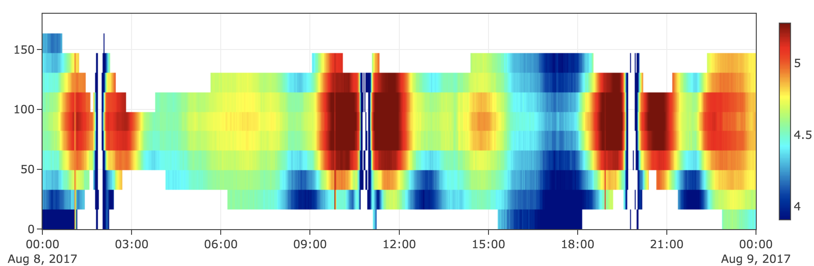
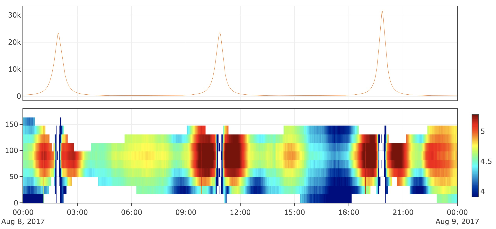

快速入门¶
笨笨是一名空间物理专业的研究生，他很认真，但是很笨。最近导师给了他一些画图任务，本以为要过一个星期才能得到结果，没想到十分钟笨笨就画好了！Σ( ° △ °|||)︴ 我们来看看笨笨是如何实现的吧！
画出磁场的变化¶
导师给了笨笨一个cdf文件，要求他把里面的磁场数据读出并画出线图。
import spacepku as sp
Data = sp.data_obj('mentor_data.cdf')
fig_B = Data.tplot('B_Calc')

只需要三行就把图画完了诶，Amazing！我们仔细看看这三行都做了什么吧！
第一步将spacepku导入
import spacepku as sp
第二步读取导师给笨笨的cdf文件
Data = sp.data_obj('mentor_data.cdf')
第三步指定画出Data中名字为B_Calc的变量，这里tplot的含义是 time series plot （fig_B是这张图的句柄）
fig_B = Data.tplot('B_Calc')
画出某能量电子的投掷角分布变化¶
继续向前，笨笨要画张横轴是时间，纵轴是电子投掷角，用颜色表示电子通量的Heatmap。
首先我们看看Data里面都有什么，直接将刚刚得到的变量Data打印出来
print(Data)
cdf data object generated from:
/data/mentor_data.cdf
0 Epoch (7825,)
1 FEDU_Alpha (11,)
2 FEDU_Energy (7825, 25)
3 FEDU (7825, 11, 25)
4 L (7825,)
5 B_Calc (7825,)
6 MLT (7825,)
7 Position (7825, 3)
笨笨只需要做两件事
- 取出时间，投掷角和FEDU
- 生成一个tplot_heatmap_obj并使用.tplot画出
time = Data['Epoch']
pa = Data['FEDU_Alpha']
fedu = Data['FEDU'][:, :, 0] #取出第1个能段的FEDU
fig_fedu = sp.plot_heatmap(time, pa, fedu)

是不是非常便捷！这两种图已经可以覆盖笨笨的大部分科研任务了，只花了不到五分钟诶
将多张图叠在一起¶
最后导师需要把刚才的两张图作为两个panel堆叠起来，这一任务只需要一行命令
fig_final = stack_figs([fig_fedu, fig_B])

这两个panel共享同一个x轴
图片的保存与读取¶
笨笨圆满完成了任务，他开心地把图片保存成png发给导师。执行了下面这条命令后，同目录下便得到了fig_final.png
save_png(fig_final, 'fig_final')
为了方便以后改图，笨笨又把这张图的源数据保存了下来
save_fig(fig_final, 'fig_final.fig')
读取图片源数据，并使用show函数显示它
fig_reload = load_fig('fig_final.fig')
show(fig_reload)